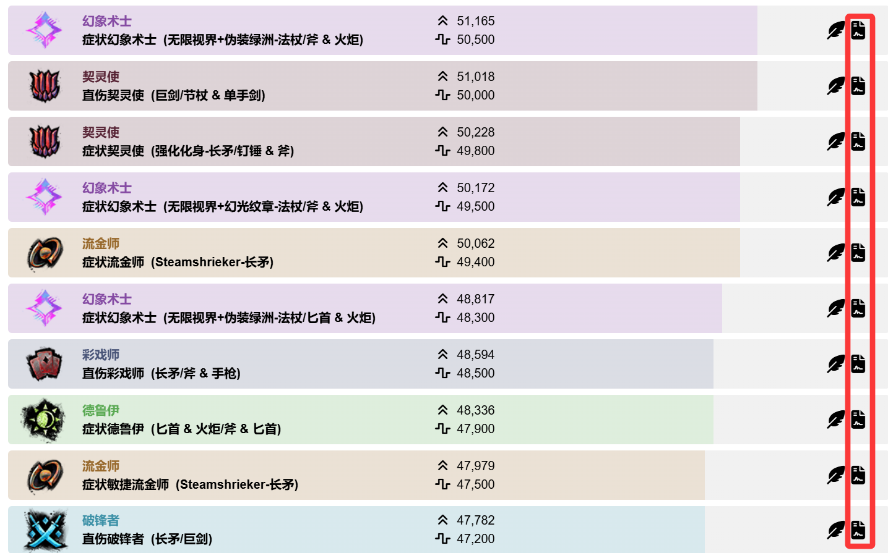
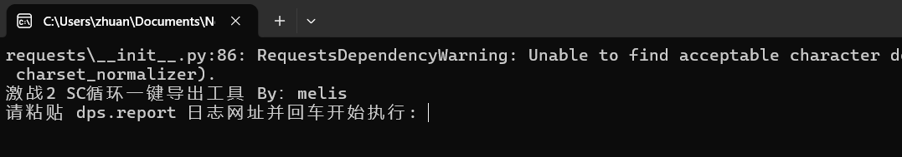
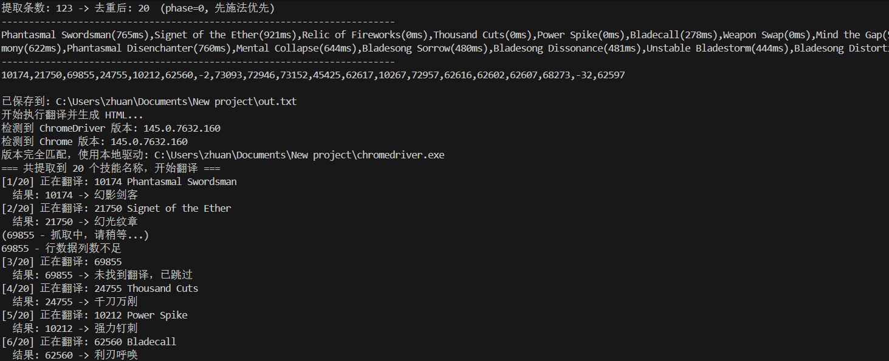
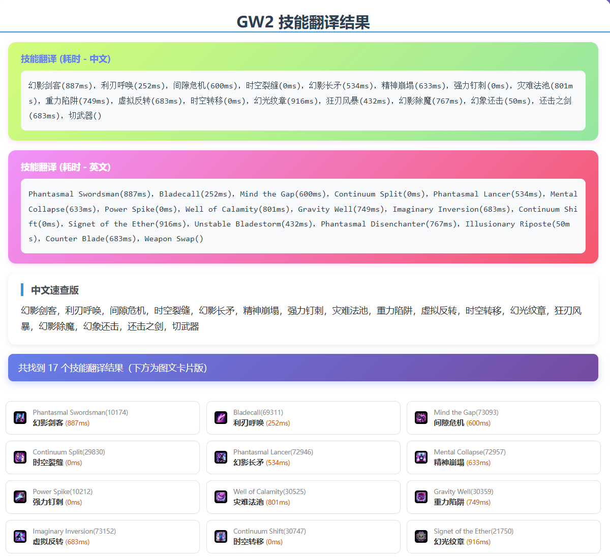
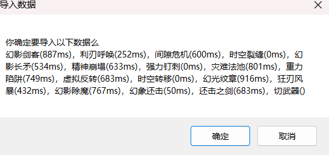
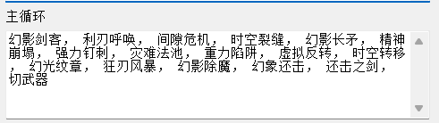
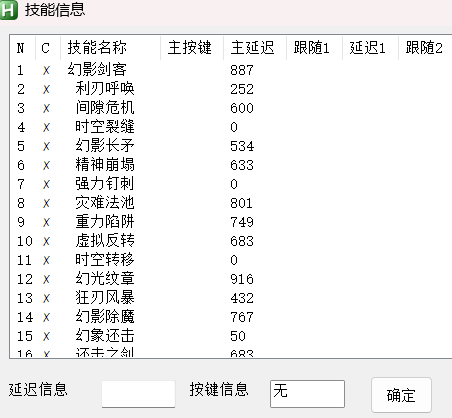

激战2 SC循环导出工具2.0，6月12日更
本工具已经支持网页版，主页右侧可直接读取，无需再下载本地
SC循环一键导出工具2.0
1，取消使用星岬岛接口，改用gw2官方翻译接口，识别速度更快，5秒即可完成翻译，不会再出现调用浏览器的报错，也无需下载任何插件。
2，修改了图文显示方式，改用竖列显示，从上往下排序，观察技能顺序更清楚。
3，减少了exe文件体积，方便下载。
4，删除了本地生成的.txt文件，只保留生成后的html文件。
5，修改了技能优先级方式，让首次出现的技能放在最前面，而不是根据循环总使用次数排序，确保例如：时空f5这类技能能有效释放。
第一步，打开文件
SC循环一键提取工具.exe

第二步，粘贴dps日志网址
例如：https://dps.report/3EEm-20260114-002734_golem

第三步，等待

运行期间会自动加载或者下载驱动，并记录循环out.txt，以及最后生成网页格式的数据
第四步，翻译完成后会自动打开网页

第五步，复制循环
幻影剑客(887ms)，利刃呼唤(252ms)，间隙危机(600ms)，时空裂缝(0ms)，幻影长矛(534ms)，精神崩塌(633ms)，强力钉刺(0ms)，灾难法池(801ms)，重力陷阱(749ms)，虚拟反转(683ms)，时空转移(0ms)，幻光纹章(916ms)，狂刃风暴(432ms)，幻影除魔(767ms)，幻象还击(50ms)，还击之剑(683ms)，切武器()
第六步，打开修改循环，导入，选择sc数据导入



会自动导入循环信息，并填入导入时的延迟数据。
然后一键取色后即可开启循环，如需单独取色调整可自行修改。
评论列表（34）
老师，为什么我SC翻译以后，提取出来的只有起手呢？还是说一直都只能提取起手一套
@豆花面 正中心按钮，查看详细循环
导入到自由循环里后，启动的时候要么唤出鼠标（我是动作模式），要么不切武器，有些技能的延迟是0是正常的吗
开启调试模式，然后进游戏开启循环，自测下颜色是否正确，颜色一致的技能会显示在左上角，如果有没显示的，说明你开了其他插件。sc工具只是告诉你技能顺序，教程可以看主页右侧。
@melis 导入到循环工具里，然后取色 设置好按键，就行了吧？还需要做什么其他操作吗？
@Lny 如果只是优先级释放不需要其他设置，例如切武器次数这些，可以自己写。
@melis 意思是切武器要重新加判定到循环里吗
@Lny 不会的可以看教程1，切武器也是技能，取色=释放按键就行，一样的原理。
感谢分享！
弄完了， 但是里边只有一个主循环，取色完了启动也不动
管理员运行才行
大家这版本用起来咋样？能不能实现
不太好用，甚至说用不了，BD里面的说明还被当成技能带到循环里去了。
是粘贴dps日志，不是星岬岛连接
我就是用的粘贴DPS日志，M佬，分析完日志，除了有武器技能伤害，精英技能伤害，还有几个技能名称怎么都对应不上，逐个看图标，发现是BD里面的
哪个职业，我看看
长弓，巨剑的美德猎龙
M佬，你的1.5我试了一下，解析完循环日志后，生成内容还是有图标不一致的问题
第一个武器，切到第二个武器行，等第二个武器循环打完，不切回第一个武器，取色了好几遍也没用，同时我试了一下，复制1.5网页生成的内容，粘贴到1.75b4，循环并没有带过来，还需要手动填写
打错字，延迟并没有带过来，延迟数据需要手动填写。然后这个网站楼中楼回复也会容易出现BUG，双回复框，M佬有空可以看一下 ： ）
我测试没问题，https://dps.report/hg9e-50259vlb_golem
正义之矛(563ms)，次级利刃符印(0ms)，能量符印(397ms)，猎人结界(718ms)，精准射击(686ms)，决心符印(236ms)，愤怒回旋(1437ms)，信仰之跃(761ms)，束缚之刃(480ms)，正义之剑(598ms)，巨龙之咽(441ms)，勇气之盾(280ms)，利刃狂舞(479ms)，偏转射击(678ms)，次级决心符印(0ms)，决心之翼(970ms)，切武器()
导入数据，选择sc数据导入，确定后，保存设置，然后f9可以正确显示延迟信息。
错误：在脚本根目录 D:\BaiduNetdiskDownload\激战2SC循环一键提取工具\chromedriver.exe 未找到 chromedriver.exe
[失败] 无法检测 Chrome 版本，请手动安装 chromedriver 到脚本根目录
Traceback (most recent call last):
File "日志提取.py", line 1102, in main
File "日志提取.py", line 880, in process_skills_data
File "日志提取.py", line 518, in _create_chrome_driver
RuntimeError: 无法检测 Chrome 版本，请手动安装 chromedriver 到脚本根目录
你试着把这个放在谷歌浏览器的根目录下面看看
网盘不是有一个chromedriver.exe，你一起下了丢一个文件夹
我下载个谷歌浏览器又打开自动开始下载驱动又可以了，但是不会调切武器- -！
开始执行翻译并生成 HTML...
检测到 ChromeDriver 版本: 145.0.7632.160
检测到 Chrome 版本: 145.0.7632.160
版本完全匹配，使用本地驱动: C:\Program Files\Google\Chrome\Application\chromedriver.exe
[失败] Message: session not created: Chrome failed to start: crashed.
(chrome not reachable)
(The process started from chrome location C:\Program Files\Google\Chrome\Application\chrome.exe is no longer running, so ChromeDriver is assuming that Chrome has crashed.); For documentation on this error, please visit: https://www.selenium.dev/documentation/webdriver/troubleshooting/errors#sessionnotcreatedexception
Stacktrace:
Symbols not available. Dumping unresolved backtrace:检测不到技能图标，有问题！
佬，我没文件，可否发下文件地址谢谢
不太行 除非能直接编辑时间轴 不然放进循环里面就乱了
这个一开始使用没问题，但是后面出现问题了，先是驱动找不到，然后电脑提示unknown hard error，然后黑屏了，不知道大家遇到了吗，是否驱动问题？
看新版能解决不
unknown hard error这个搞了一晚上。重新下了一个谷歌浏览器放在根目录，现在用起来暂时没问题
翻译工具打开，顶上显示requests\__init__.py:86: RequestsDependencyWarning: Unable to find acceptable character detection dependency (chardet or charset_normalizer).网页什么都没生成
试下最新的 一键版
大杀器了！